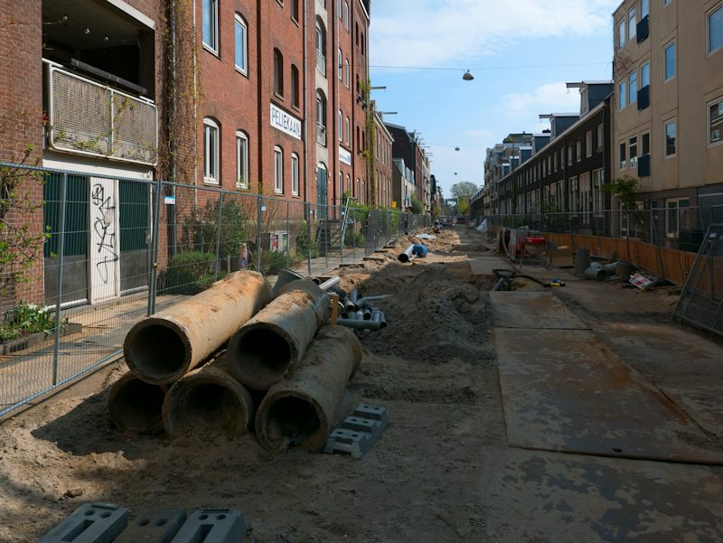
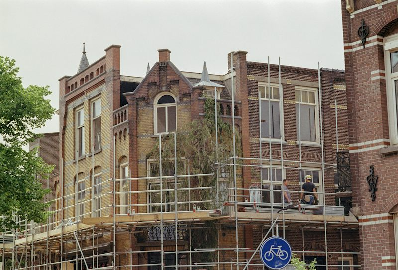
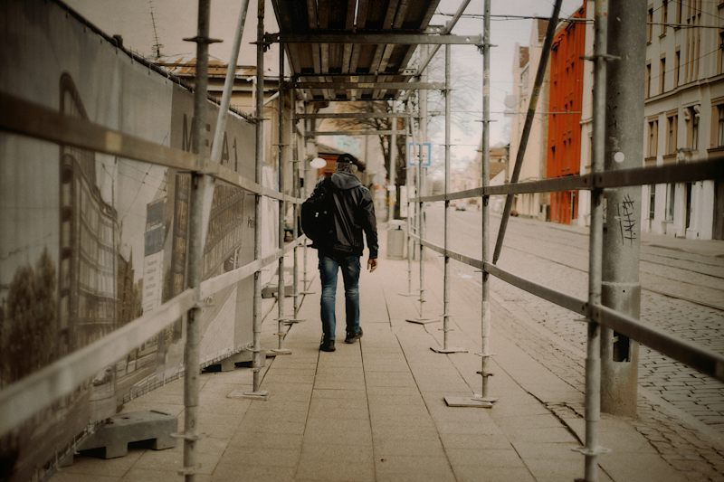

Ten years ago, Mill Street was noisy and dirty. Cars parked everywhere, and the shops closed early. Now a lot has changed. The city has replaced the old road and has built a bike path. Traffic has decreased, and neighbors have opened two cafés. Next spring, workers are going to repair the old wall.
Teacher · Session card (Ficha de Sesión)
| Campo | Valor |
|---|---|
| Nivel / MCER | Intermedio 2 · GT English Path Nivel 08 · B1.2 · modalidad online (grupo / 1:1) · modo Producción + Interacción |
| Bloque / sesión | Bloque 1 · CHANGE · sesión 4 de 32 · MISSION del bloque · contexto V (vida cotidiana + un caso de trabajo) · Seguro · Engaging |
| Objetivo | Contar cómo evolucionó una situación (barrio, servicio, rutina o un proceso de trabajo): cómo era antes, qué ha cambiado ahora y qué va a pasar después. |
| Punto de lengua (uno) | Contrastar past simple (Before, tiempo terminado) + present perfect (Now, resultado sin tiempo terminado) + going to (Next, plan) para contar la evolución. Receptivo: has been + participio en los textos. |
| Límite | Sin used to (no está en el mapa), sin present perfect continuous, sin will para predicciones, sin pasiva productiva, sin segundo condicional, sin reported questions, sin have got. |
| Léxico nuevo (11) | improve · increase · decrease · replace · repair · build · neighborhood · under construction · no longer · a lot has changed · in the near future |
| Reciclaje | S01 (10/10 reaparecen en mantenimiento): update · booking · delay · status · pending · reschedule · confirm · send an update · cause a delay · at the last minute. Present perfect de S01. (S02 y S03 aún no tenían ficha al producir esta sesión.) |
| Dinámicas (4 familias) | VOC-07 Describe It, Don’t Say It (OCULTAMIENTO) · GRM-11 Consequence Chain (ESCALADA, etapa Meaningful → comunicativa) · B18-11 Before, Now and Next (COLECCIÓN) · LIS-11 Instruction Trap (IMPOSTOR) |
| Disagreement hook | “Most changes in a neighborhood are an improvement” vs “Every improvement also has a cost”. |
| Misión (evidencia) | The Evolution Report: 2 informes de 60–90 s (un caso de barrio + el caso de trabajo) con checklist de 9 criterios; éxito ≥7/9 en cada informe, sin leer. |
1
Warm-up · Slide through time
0–4 min · Activate, no correction

BEFORE · imagine itNOWScenario · a street in your city
This street has changed. What was here ten years ago?
It was…
Slide to the left: the past. Slide to the right: today.
TWO SIDES
“Most changes in a neighborhood are an improvement.” — “Every improvement also has a cost.”
Which side are you on?Why?
Your topic
Pick ONE thing that has changed. It is your topic for the whole class.
Choose a cardWhat was it like five years ago? — One word is enough.
What is different now? — Say one thing.
Is it a good change or a bad change? — Why?
Teacher notes · §1 Warm-up
Pedagógica
- Activación, NO gramática: deja que usen cualquier forma (“It was…”, “It has changed”, “It changed”). No corrijas; en §3 el contraste se descubre. Máximo 4 minutos: 1 min slider + gancho, 2 min elegir tema + 3 preguntas flash, 1 min margen.
- El slider usa la MISMA foto con filtro sepia como “antes imaginado”: pide que imaginen qué había (casas, mercado, árboles). No es una foto real del pasado: dilo.
- El tema que elijan se reutiliza en §3 (cadena oral), §6 (tarjetas) y §8. Un tema por sesión (guardrail de B18-11).
- Gancho: pide 1 razón, no un debate (límite del nivel). Grupo: parejas, 30 s. 1:1: tú tomas el lado contrario en 1 frase.
- Anota si usan espontáneamente has changed o solo changed: línea base del contraste.
Engagement
- “Every place you know has a Before, a Now and a Next. Today you tell the story.”
- Anécdota: “¿Qué lugar de tu ciudad cambió más rápido que cualquier otro? ¿Qué había antes?”
Crecimiento
- “In 56 minutes you’ll give a 90-second report: before, now, next — a skill you use in any status meeting.”
- Cuenta el reciclaje: S01 enseñó has changed vs changed; hoy lo conviertes en una historia completa.
2
Vocabulary · Describe It, Don’t Say It
4–12 min · Clues · Guess · Sentence
Step A · 5 min
Give clues. Don’t say the word.
0 rounds · 0 pts1. The describer opens a secret card. 2. You have 45 seconds: clues only. Don’t say the word, its translation or the “don’t say” words. 3. The others answer in a full sentence. A correct sentence = +1 point. Points come from language, not speed.
CARD · pick one from the pile
Draw a card from the pile →
Play at least 6 rounds. The other cards are bonus.
Points 0Top word —
Group: teams of 2–3. One describer per round; rotate.1:1: you describe, the teacher guesses. Then swap for 3 cards.
Clue startersIt’s the opposite of…You do this when…You see this in a…It’s like… but…
Step B · 3 min
Complete the messages
Recycled from Session 1:updatedelaystatuspendingconfirmreschedulebookingsend an updatecause a delayat the last minute
Teacher notes · §2 Vocabulary
Pedagógica
- VOC-07 · OCULTAMIENTO. Reglas 3-3-3 (di exactamente esto): “Don’t say the word. Use your clues. The answer is a sentence.” 45 s por ronda; punto por oración correcta (no por rapidez). Cierre en voz alta: “Team __ has __ points. The top word was __.”
- Cada tarjeta trae “don’t say” (la palabra, su traducción y 2 palabras muy cercanas). Pide pistas en oraciones cortas (“You do this when a road is broken”); si el describidor traduce o dice la palabra, la ronda se pierde.
- Guardrail A2/B1: nunca traducir ni nombrar el lugar o proceso. Si el alumno se bloquea, ofrece un “clue starter”.
- Juega 6 rondas (≈4–4.5 min); las 5 cartas restantes son extra. Después: paso B (3 min) con 3 palabras reciclables de S01 mezcladas.
- Pronunciación: increase (verbo /ɪnˈkriːs/, acento al final), decrease /dɪˈkriːs/, neighborhood /ˈneɪbərhʊd/, replace /rɪˈpleɪs/.
Engagement
- Grupo: el equipo que adivina dice la oración completa; el describidor rota. 1:1: tú adivinas “mal” una vez a propósito para que enriquezca la pista.
- “Estas 11 palabras son el vocabulario de cualquier cambio: del barrio, del trabajo o de tu rutina.”
Crecimiento
- Reciclaje: update, delay, status, pending, confirm, booking, at the last minute reaparecen en §2B, §4, §5 y en la Misión (caso de trabajo). ≥70 % del léxico vuelve en la producción.
- Dato para ventas: “Con 21 palabras ya explicas un cambio de plan y su evolución. Eso es lo que pide una junta de estatus.”
3
Language · Three tenses, one story
12–24 min · Discover 2 · Tool 3 · Drill 2 · Chain 3 · Use 2
Step A · Discover · 2 min
Read the story of the old hall. What changes in the verb?

BEFORE
The old hall closed in 2018. It was empty for years.
NOW
Workers have repaired the roof. They haven’t finished the wall yet.
NEXT
Next spring the city is going to open a library there.
Step B · Tool · 3 min
Which tense? Ask yourself one question.
BEFORE · past simple
It closed in 2018.
The time is finished and we say it (or we know it).
in 2018two years agolast yearthen
NOW · has / have + participle
They have repaired the roof.
The result matters today. No finished time.
nowalreadyyetso far
NEXT · am / is / are going to
They are going to open it.
A plan or something we expect to happen.
next springsoonin the near future
| Base | Before (past simple) | Now (has / have + …) |
|---|---|---|
| build | built | has / have built |
| buy | bought | has / have bought |
| send | sent | has / have sent |
| lose | lost | has / have lost |
| replace · repair · improve · decrease | + -ed (replaced, repaired…) | has / have + -ed (has replaced…) |
Step C · Drill · 2 min
Pick the best form
Step D · GRM-11 · 3 min
Consequence Chain: how long can you go?
Best chain: 0 links1. Each link starts from the end of the link before: “…so…”. 2. The slot tells you the time: BEFORE, NOW or NEXT. 3. The chain stops at the first mistake. Points = links, not speed.
Step E · Use · 2 min
Your chain, your topic — out loud
Topic: choose one in the Warm-upStart: “Five years ago, your topic was…” Then build with so across the three times: Before → Now → Next. The partner counts the links.
Last 0Best 0
Group: pairs. The partner taps ✓ after each correct link (max 8).1:1: you build the chain with the student: one link each. You tap ✓ / ✗.
Teacher notes · §3 Language
Pedagógica
- Un solo punto de lengua: contar la evolución con past simple + present perfect + going to. Explicación continua ≤5 min (Discover 2 + Tool 3). Práctica mecánica = Step C, 2 min (≤1/3 del bloque de 12).
- Discover: sin dar la regla. Pregunta: “¿Qué cambia en el verbo? ¿Qué palabra te da la pista?” Activa “Show the key words” solo después de que lo intenten. Lo que se ve: closed in 2018 / was · have repaired / haven’t … yet · is going to open.
- Tool (regla de bolsillo): ¿tiempo terminado? → past simple. ¿resultado hoy, sin tiempo? → has/have + participio. ¿plan? → going to. Participios irregulares de hoy: built, bought, sent, lost.
- GRM-11 · Consequence Chain (Meaningful → comunicativa). Reglas 3-3-3: “Start from the last words. Add one link with ‘so’. The chain stops at the first mistake.” Puntaje: eslabones antes del primer error (no velocidad). Cierre: “Our chain has __ links before the first error.” Hay 2 cadenas (barrio y almacén). Si se rompe, discute la razón mostrada y reintenta (el orden de opciones cambia).
- Uso (Step E): cadena oral con SU tema: tú o la pareja pulsan ✓ por cada eslabón correcto. Máximo 8.
- Límites: sin will, sin used to, sin present perfect continuous. Si dicen used to, acéptalo sin enseñarlo y reformula con past simple.
Engagement
- Cierra cada cadena exagerando el final: “Your chain has 6 links. That’s a whole story!”
- Errores comunes de hispanohablantes: It has changed in 2018 (tiempo terminado), They has…, going to sin are. Anótalos para el Bounty de otras sesiones; hoy el error se discute, no se señala a una persona.
Crecimiento
- S01: has changed vs changed. S02 sumará yet / already / just; hoy ya salen yet y already de forma natural.
- Mide: ¿cuántos eslabones antes del primer error? Guárdalo: en el Checkpoint de S08 el objetivo es +2 eslabones.
- “Con estas tres formas puedes contar casi cualquier historia de cambio en una junta de estatus.”
4
Reading · Three changes, three texts
24–27 min · Sort Before, Now, Next
Before March, we wrote every order on paper. Mistakes increased every month and caused delays. Now every worker has a scanner, and errors have decreased by half. We have not replaced the old printers yet, so that task is still pending. Next month, we are going to send an update to all clients.
You won't believe the old market! It closed in 2022, and the building was empty for two years. Now they have opened a gym and a bakery there. Rent has increased, so my cousin's shop is no longer on the street. Next year they are going to build apartments next door.
Task 1 · 1.5 min
Pick a sentence, then pick its time
Task 2 · 1.5 min
Check the details
Teacher notes · §4 Reading
Pedagógica
- Carga: tres tarjetas de 51–54 palabras (tope B1: 60). Lectura en silencio 45 s; después la tarea 1 (ordenar 9 oraciones por tiempo) y la tarea 2 (4 preguntas). Respuestas MC: the city has built a bike path · the printers · the rent increased · False.
- Ordenar: clic en una oración y luego en Before / Now / Next. Si falla, la oración se sacude y puede volver a intentar. Pregunta después: “¿Qué palabra te dio la pista?” (ten years ago, in 2022, has / have, next year, going to).
- Receptivo, no productivo: si preguntan por has been o pasivas (no aparecen hoy), responde: “Session 5.” Hoy solo activo.
- Segunda vuelta opcional (30 s): cada alumno cuenta UNA tarjeta con sus palabras, sin leer.
Engagement
- “Which text sounds most like your own city or your own job?”
- Las tres tarjetas son tres registros reales: boletín vecinal, memo de trabajo y chat con un amigo.
Crecimiento
- Las tarjetas son el modelo de la Misión: Before (pasado) → Now (has/have) → Next (going to). Reciclan delay, update, pending de S01.
- Señala: “En una junta, el memo se lee en 20 segundos; tu informe oral lo dice en 60–90.”
5
Listening · Instruction Trap
27–34 min · One step is wrong. Stop it.

Scenario · A voice message
Marta tells Ben how to get to the community center.
Six steps. One step is wrong or unsafe. Press STOP when you hear it. Then say which step it was and what the right step is.
Task 1 · Follow the route
Listen to each step. You can replay any step.
0 / 2 ptsTask 2 · You pressed STOP
Which step was wrong?
What is the right step?
Task 3 · Details
Check what you understood
Teacher notes · §5 Listening
Pedagógica
- LIS-11 · IMPOSTOR. Reglas: “Listen to the instructions. One step is wrong. Stop it and say the right step.” Puntaje: 1 por detener/identificar el paso ilógico + 1 por decir el correcto. Cierre en voz alta: “The wrong step was __. The right step is __.”
- Guion [PARA GRABAR] (168 palabras, 1 hablante, 6 clips): MARTA, mujer, inglés brasileño, velocidad media-lenta. Es el acento no nativo de esta sesión. Paso trampa = el 4 (“climb over the fence and walk through the work area”): inseguro sin conocimiento técnico. Paso correcto aceptable: “use the path around the fence / follow the signs / walk around the work area”.
- Language focus (≥2 veces, sin subrayar): has changed / has replaced / has increased · closed / repaired / moved · are going to open / are going to build. Léxico: a lot has changed, replace, repair, no longer, under construction, increase, update, delay, near future, build.
- Flujo (7 min): 1) playAll sin texto (1.5 min) 2) STOP + elegir paso y paso correcto (1 min) 3) repetir paso 4 y decirlo en voz alta 4) Task 3 (detalles) 5) mostrar el guion al final.
- Hoja de respuestas: paso equivocado = 4 · paso correcto = rodear la zona de obra y seguir las señales · Task 3: a) how to get to the community center · the new stop · yellow · until nine.
- Audio: los 6 pasos son archivos aparte; mientras no exista el mp3 se usa voz del navegador con aviso “Audio no disponible”.
Engagement
- Pregunta anécdota: “¿Alguna vez alguien te dio indicaciones que no tenían sentido?”
- Si detienen el paso equivocado dentro del paso 4 o justo después, celebra: “You caught the trap!” Si lo detienen en otro paso, deja que lo discutan: ¿por qué sí tenía sentido?
Crecimiento
- Habilidad de trabajo real: detectar una instrucción insegura antes de seguirla (seguridad, calidad).
- Marca en el historial: ¿identificó el paso a la primera? ¿Propuso el correcto con You have to / You should o con una oración propia?
6
Speaking · Before, Now and Next
34–46 min · Fill the board · Present it
1. Divide the board: Before · Now · Next. 2. Compare Before with Now. 3. Make a simple prediction with going to. Points: 1 for each correct comparison, 1 for each prediction with going to.
Topic: choose one in the Warm-up
BEFORE 0 / 5
NOW 0 / 5
NEXT 0 / 4
CARD 1 OF 14
BEFORE
Collected 0 / 14Comparisons 0Predictions 0Points 0
Before, I…Five years ago, there was…Now, it has…It is better / worse than…It’s going to…In the near future…
Group: pairs or trios in breakout rooms. A answers, B asks the follow-ups and taps the score button. Swap every 3 cards.1:1: you ask the card and the follow-ups. Tap the score button only when the student produces the target form. After 7 cards, swap roles for 3 cards.
Presentation · last 3 min
60–90 seconds: tell the whole story of your topic
Teacher notes · §6 Speaking
Pedagógica
- B18-11 · COLECCIÓN (fiel al banco): pizarrón dividido en Before · Now · Next; comparar Before con Now; predicción sencilla con going to (sin will). Puntaje: 1 por comparación correcta, 1 por predicción con going to. Guardrail: un solo tema por sesión; sin predicciones complejas. Cierre en voz alta: “Before there was __. Now there is __. Next __.”
- 14 tarjetas (5 Before, 5 Now, 4 Next); 9 llevan 2 follow-ups, 5 llevan 1. Las tarjetas Before cuentan como “coleccionadas” (sin punto) cuando usan past simple + tiempo terminado; las Now valen punto si comparan con el pasado con has/have; las Next valen punto con going to.
- Prep B1: 20–30 s en silencio antes de cada tarjeta; luego produce sin notas. 12 min = 8 min de tarjetas (≈7 por persona) + 3 min presentación de 60–90 s + 1 min cierre.
- Nivel guard: nada personal sensible; permite hablar de un tercero o de un caso inventado. “Topic” cambia las preguntas sin modificar la gramática.
- No corrijas durante las tarjetas; anota 2 aciertos y 3 errores de alto valor (has vs past, participios, are going to) para el wrap-up.
Engagement
- Lee el tablero: “You’ve collected 9 cards. Your Before is full.”
- 1:1: usa tu propio tema (tu ciudad, tu rutina) en 2 tarjetas para modelar sin leer.
Crecimiento
- La presentación de 60–90 s es el ensayo de la Misión. Cronométrala: ¿llegó a 60 s sin español ni pausas largas?
- Guarda el marcador (comparaciones/predicciones) en el historial para el Checkpoint 1 (S08).
7
Mission · The Evolution Report
46–54 min · Block 1 mission · Your evidence
BLOCK 1 MISSION · evidence for Session 8
You explain what changed — before, now and next.
Your team asks for a status report. Give two 60–90 second reports: Report 1 about a neighborhood case, Report 2 about a work process. Prepare for 30 seconds, then cover the card and speak. Your partner asks one clarification question.
Success: at least 7 of 9 criteria in each report, without reading.
Step 1 · Report 1 · choose a case
A neighborhood case
All cases are fictional.Step 2 · Report
Speak. Your partner ticks the criteria.
Group: A reports, B asks one clarification question and ticks. Swap roles with the next case.1:1: the student reports; you ask one clarification question (When did it change? Has it finished yet? What is going to happen next?) and tick.
Step 3 · Evidence
Mission status
REPORT 10 / 9
REPORT 20 / 9
MISSIONIn progress
Teacher notes · §7 Mission
Pedagógica
- Misión del Bloque 1 (producto de evidencia): The Evolution Report. Dos informes de 60–90 s: caso de barrio (elige 1 de 3) + caso de trabajo (reservas de sala). Tiempos: preparar 30 s · informe 1 (75 s) · preguntas/ticks (45 s) · informe 2 (75 s) · ticks y cierre (2 min).
- Checklist de 9 criterios (por informe): 1) ≥2 past simple con tiempo terminado · 2) ≥2 has/have + participio · 3) ≥2 going to · 4) una pregunta o respuesta con yet · 5) ≥4 palabras nuevas de hoy · 6) ≥2 palabras de S01 · 7) un conector (so / but / then / now / next) · 8) 60–90 s sin leer · 9) cierre en voz alta “Before… Now… Next…”. Éxito: ≥7/9 en cada informe.
- Cubrir la tarjeta (“Cover the card”) antes de hablar: el criterio 8 se marca solo si no leyeron.
- Giro obligatorio (grupo y 1:1): el interlocutor hace UNA aclaración (“When did it change?” / “Has it finished yet?” / “What is going to happen next?”) y el alumno responde y continúa.
- Evidencia observable: checklist + resumen copiable (se pega en el registro del alumno). Registra el nivel de logro (6/9 = casi; 7–9 = logrado).
Engagement
- Anuncia en voz alta: “Report 1: __ of 9. Report 2: __ of 9. Mission complete!”
- Si logran ≥7 en ambos: “You can now tell the story of any change. That’s a status meeting in English.”
Crecimiento
- Qué decir (ventas): “En 54 minutos pasaste de describir un cambio a explicar su evolución completa. Eso es lo que hace un líder de equipo en una junta de estatus.”
- Cómo se ve el progreso: S01 explicaba un cambio puntual (5 movimientos); hoy cuenta 3 tiempos con evidencia. En S08 el Checkpoint mide integración: cambio → estatus → detalle → siguiente paso.
8
Wrap-up · Your Before, Now and Next
54–60 min · Feedback · Exit quiz · Say it aloud
VOCABULARY0 ptsDescribe It
CHAIN0 linksConsequence Chain
SPEAKING0 ptsComparisons + predictions
MISSION—Evolution Report
✓ Keep
✎ Fix
↻ Next use
Exit quiz
60 seconds · 5 questions — say the answer before you click
Say it out loud
Before today… Now… Next…
Can-do
Tick what you can do
04
Mission complete
You can tell how a situation evolved: before, now and next.
Homework: write 6 sentences about a real place or process — 2 for Before (past simple, with a time), 2 for Now (has / have + participle), 2 for Next (going to). Bring it to Session 5. Next: Session 5 · The Missing Invoice
Teacher notes · §8 Wrap-up
Pedagógica
- Keep → Fix → Next use: máximo 2 aciertos y 3 correcciones de alto valor (tiempo terminado vs has/have, participios irregulares, are going to). 2 min.
- Exit quiz (2 min): respuestas en voz alta antes del clic. Respuestas: has built · closed · are going to repair · no longer · When did it change?
- Cierre declarado en voz alta (close_out): “Before today I __. Now I can __. Next I’m going to __.” El alumno elige una frase de cada fila y la dice (1 min). Es el cierre del bloque de la sesión.
- Registra en el historial: puntos de Describe It, eslabones de la cadena, comparaciones/predicciones, y los dos puntajes de la Misión (de 9).
Engagement
- “Minute 1: you looked at a street. Minute 58: you told its whole story.”
- Pregunta final: “What is going to change in YOUR work this month?”
Crecimiento
- Tarea de 6 frases = materia prima de S05 (pasiva frecuente: was sent / was approved) — se conecta con el Before.
- ≥70 % del léxico vuelve en S05–S08. Menciona el Checkpoint de S08: cambio → estatus → detalle → siguiente paso.
- Propuesta de continuidad: “Si quieres que esto se vuelva automático, el siguiente módulo trabaja procesos y personas clave.”